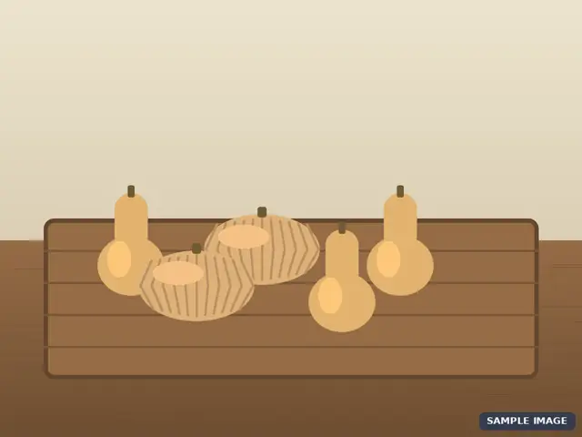
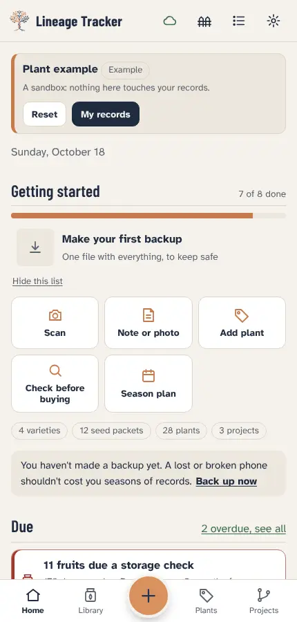
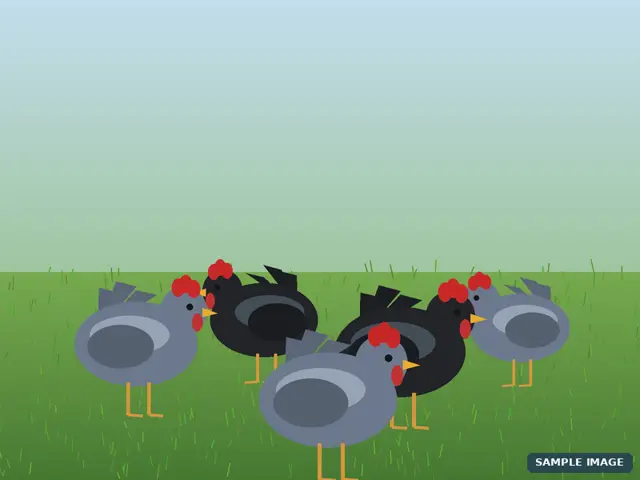
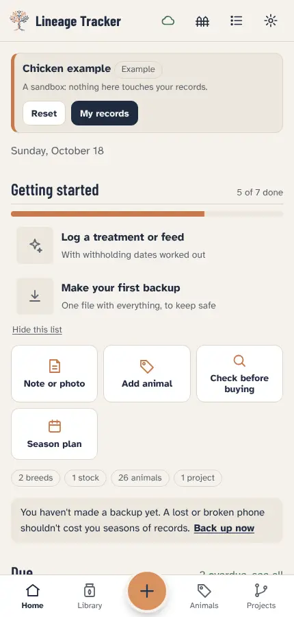
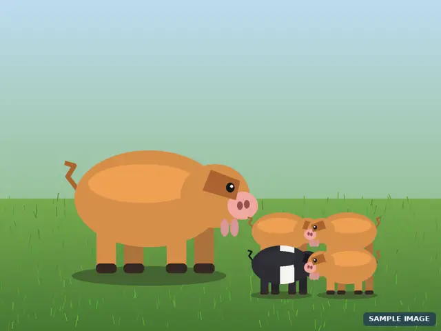
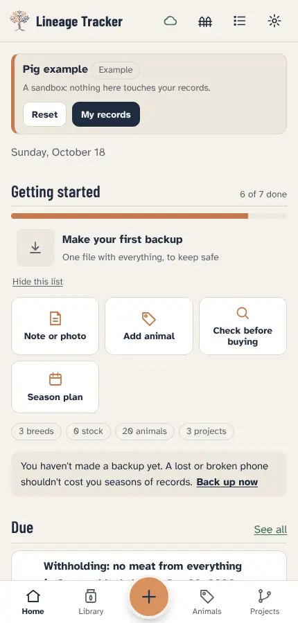
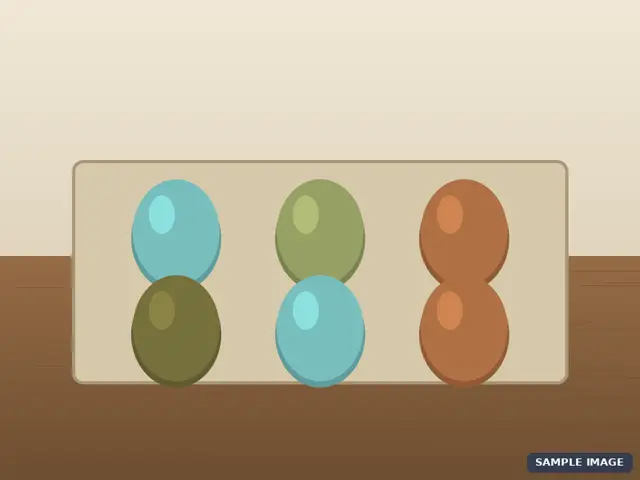
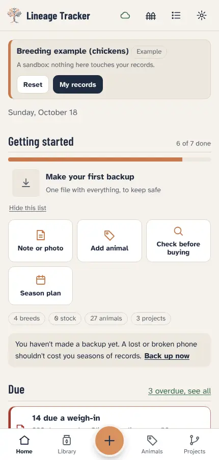

Lineage Tracker
Lineage TrackerTry an example
Open a made-up example in the app and tap anything. Nothing here touches your own records.


Pantry Keeper squash
A squash project with an F2 family, a bring-back plan and storage trials. Shows the seed library, crosses, selection against a goal and the planting plan.
Shows: Seed library, crosses, storage trials, bring-back plan.
Everything in it is made up, including the names, numbers and companies. Pictures are cartoon illustrations tagged SAMPLE IMAGE. It opens in its own workspace and never mixes with your own records. Remove it any time from Settings.


Blue Australorp laying line
A laying line across three generations: breeding pen, egg counts, weigh-ins and a pedigree you can trace.
Shows: Pedigree, egg counts, weigh-ins, hatch dates.
Everything in it is made up, including the names, numbers and companies. Pictures are cartoon illustrations tagged SAMPLE IMAGE. It opens in its own workspace and never mixes with your own records. Remove it any time from Settings.


Kunekune herd
A small heritage herd on pasture: three colours, five litters, a pregnant sow with a birth-due reminder, paddock rotation, worming with withholding periods and a breeding plan.
Shows: Litters, farrowing dates, paddocks, worming and vaccines, outcross plan.
Everything in it is made up, including the names, numbers and companies. Pictures are cartoon illustrations tagged SAMPLE IMAGE. It opens in its own workspace and never mixes with your own records. Remove it any time from Settings.


Olive Egger line
A multi-founder chicken project: blue and brown egg layers crossed for olive eggs, with a genetics prediction, backcrosses and a breeding plan.
Shows: Founders, genetics prediction, backcross plan, egg colour scores.
Everything in it is made up, including the names, numbers and companies. Pictures are cartoon illustrations tagged SAMPLE IMAGE. It opens in its own workspace and never mixes with your own records. Remove it any time from Settings.